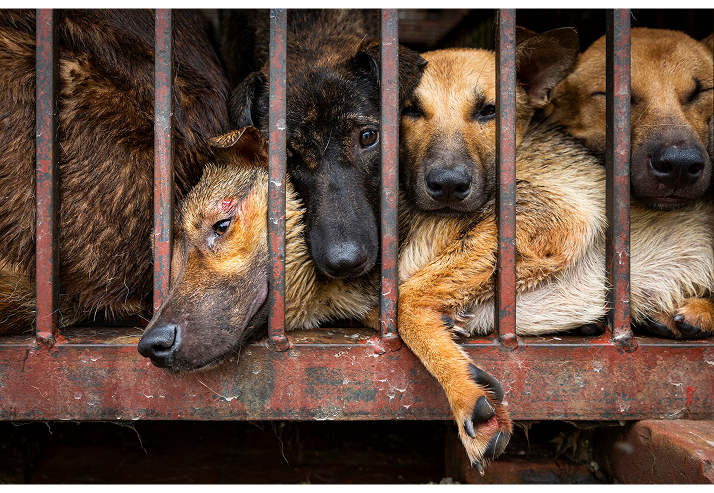

An estimated 5 million dogs are killed annually in Vietnam alone. A significant proportion are stolen family pets or strays, transported hundreds of kilometres in severely overcrowded, inhumane conditions. These are not wild animals — they are companion animals with owners, names, and families.
The trade operates entirely outside Vietnam's food safety framework. There are no registered slaughterhouses, no veterinary inspections, and no hygiene standards. Independent health authorities have documented the trade as a confirmed vector for rabies, E. coli, and salmonella — posing risks not only to consumers but to the broader public through uncontrolled disease spread.
This is not an outside movement imposing foreign values. A 2021 survey of Vietnamese citizens found that 95% support ending the dog meat trade. The government's failure to act is not a reflection of public will — it is a failure of political will. We are asking authorities to listen to their own people.
Introduce and enforce legislation banning the commercial dog meat trade across all provinces.
Criminalise the theft and trafficking of companion animals with enforceable penalties.
Establish clear animal welfare protections aligned with international standards and WHO guidelines.
Allocate resources to community transition support for those economically dependent on the trade.